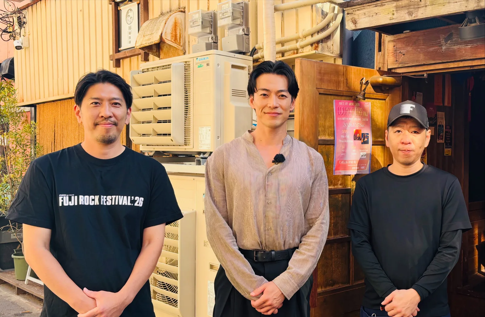
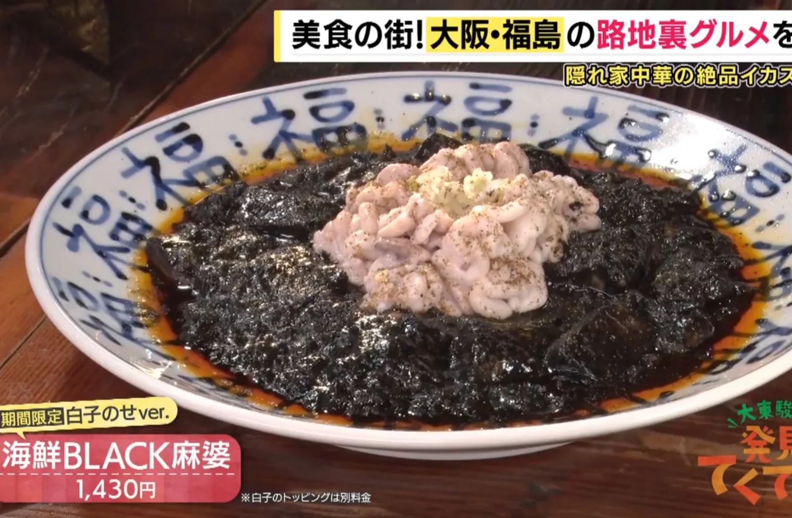

2026年10月29日
写真掲載許可済み


写真掲載許可済み #大東駿介さんがイケメン過ぎました #今まであった人の中で1番イケメン #俳優さんの中で1番好きになりました .イケメン過ぎてOAみたら僕めちゃくちゃ緊張してました. .tempalayをよく聞くそうです OA無事流れました。 ⚫︎オヤジと僕はフジロックのTシャツきてます。 ⚫︎知り合いが出過ぎてました。 ⚫︎尺が思たより長かったです。 昔の写真がてんこ盛りで、 有馬の歴史がわかりますので、 ぜひご覧ください https://tver.jp/episodes/ep2s1vig3f?utm_medium=share #大東駿介 さん #発見てくてく学